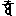

大正新脩大藏經 第20冊
No.1120A 金剛頂勝初瑜伽經中略出大樂金剛薩埵念誦儀 (1卷)
【唐 不空譯】
第 1 卷
No. 1120A
稽首禮大密 從持金剛生
開演微妙儀 簡要契真實
瑜伽修習者 願興利樂心
十方盡無餘 一切眾生界
真言性成就 隨意稱誦之
oṃ sa rva yo ga ci tta ma tpā da
唵(一) 薩 嚩 瑜 誐 質 多(二) 母 答播(二合) 娜
ya mi
夜 弭
由纔發此心 滅除一切障
獲安樂悅意 超彼眾魔羅
即同諸如來 世天皆供養
知法無自性 達勝義菩提
思惟己體中 普賢心若月
身相歸空寂 湧現跋折囉
五股潔白輝 變同薩埵貌
質素蓮臺爾 五佛用嚴冠
朱衣背赤光 安住圓明內
真言及自印 其次建立之
仁者應半跏 左肢右足押
智拳輪擲已 用按於胸間
[合*牛]為心真言 定拳慢居胯
金剛身語意 支分勿傾斜
本尊大印成 次結金剛掌
竪合交初分 密言如是稱
便為金剛縛。其明如後陳。
開縛摧拍心。應誦密言曰。
va jra va tva tra ṭ
嚩 日囉(二合) 滿 馱(一) 怛囉(二合) 吒(吒半音呼)(二)
va jra ve śa aḥ
嚩 日囉(引二合) 吠 捨(一) 噁(二)
va jra mu ṣṭi vaṃ
嚩 日囉(二合) 母 瑟知(二合)(一) [牟*含](二)
分彼拳作二 左慢右安心
身語意金剛 形體依初觀
同前縛為准 智與進如門
禪逼於其中 祕密三昧契
印心額喉頂 皆誦此真言
金剛縛又陳 忍願成刀狀
進力捻刃側 依初第一文
禪押於智端 如結加趺勢
印頂心當想 毘盧遮那佛
儼然潔白輝 誦此真言曰
va jra sa tva
嚩 日囉(二合) 薩 怛嚩(二合)
va jra ra tna
嚩 日囉(二合) 囉 怛那(二合)
次作寶鬘印 灌頂以嚴身
用二金剛手 額前遂縈繞
復分拳腦後 如前又繫鬘
自檀慧徐開 以羽兩傍下
若垂繒帶想 誦次復真言
oṃ va jra mā lā bhi ṣiṃ ca māṃ
唵(一) 嚩 日囉(二合) 麼 邏(引) 避 詵 者(二) 滿(三)
va jra tu ṣya hoḥ
嚩 日囉(二合)(一) 覩 使野(二合)(二) 斛(三)(引)
金剛慢印明 默心誦一遍
sa rvaṃ ku ru ya thā su khaṃ
薩 梵 矩 嚕(一) 野 他 素(上) 欠(二)
復具明如上 金剛薩埵冠
以五佛色身 安住相應印
遍照薄伽梵 契住如來拳
次陳阿閦鼙 定羽持衣角
成拳按心上 慧觸地如儀
施願寶生尊 智掌仰當乳
無量光勝印 定拳幔執蓮
慧拳似敷華 又如無動佛
智羽三幡相 如拔濟有情
揚掌於乳傍 不空成就印
又作金剛縛 開掌禪智合
檀慧直如峯 忍願入於掌
相合如箭狀 印心額及喉
於頂亦如之 皆用心密語
he ma hā su kha va jra sa tva
系(一) 摩 訶 素(上) 佉 嚩 日囉(二合) 薩 怛嚩(二合引)
ya ki śī ghraṃ ma hā su kha
夜 呬(二) 試 仡[口*臨](三合)(三) 摩 訶(引) 素(上) 佉
va jra mo gha sa ma ya ma ḍa pā
嚩 日囉(二合) 目 佉 三 昧 耶(四) 摩 弩 播
la ya pra bu dhya bu dhya su
攞 野(五) 鉢囉(二合) 畝 [亭*夜](二合) 畝 [亭*夜](六) 素(上)
ra ta stva ma ḍa ra kto ma
囉 多 薩怛梵(三合)(七) 摩 拏 囉 訖覩(二合) 茗
bha va su ta ṣyo mu bha va su
婆 嚩(八) 素(上) 覩 瑟庾(二合) 茗 婆 嚩(九) 素(上)
dṛ pho mo bha va su po ṣyo mo
地哩(二合) 住 茗 婆 嚩(十) 素(上) 報 瑟庾(二合) 茗
bha va bha ga vaṃ na na di ni dha
婆 嚩(二合)(十一) 婆 伽 梵(十二) 曩 曩(引) 儞 [寧*頁] 馱
naḥ sa rva sa rva si dvi me pra
諾 薩 怛嚩(二合)(十三) 薩 嚩 悉 地 茗(十四) 鉢囉(二合)
ya ccha e ṣa tvā na kṛ ṣya
野 車 翳 沙 怛嚩(二合引)(十五) 曩 訖哩(二合) 使野(二合)
pra ve śya sa ma ye rmva
鉢羅(二合) 吠 奢(十六) 三 昧 裔 囉嚩(二合)
dhvā va śī ka ro mi me rmu drā
馱縛(二合引)(十七) 嚩 試 迦 嚕 弭(十八) 昧 畝 娜囉(二合引)(十九)
ma tra pa deḥ jaḥ hūṃ
滿 怛囉(二合)(二十) 跛 乃(二十一) 弱 [合*牛](二十二)
vaṃ hoḥ
[牟*含](二十三) 斛(二十四)
諸尊當適悅 警覺三昧耶
誦至弱字明 忍願如鉤狀
開鉤已心畢 本尊降道場
眾聖亦同臻 依位儼而住
忍願便相拄 如環索契成
[合*牛]字羂入之 二度極相繞
鎖成止諸聖 懵字是其明
上下徐動搖 磐成稱斛句
念其音清暢 能悅眾聖心
閼伽契乃陳 堅住金剛掌
忍願遂相合 進力若鉤形
禪智捻其根 側印稱唵句
oṃ ka ko mu khaṃ sa rva dha rmma ṇa mā
唵 迦(引) 嚕 目 欠(一) 薩 嚩 達 摩 那 磨
dya ḍa tpa na tvā ṭ
娜語(二合)(二) 弩 多半(二合) 曩 怛嚩(二合) 多(多半音)(三)
便捧其香水 稱後閼伽明
pa ra ma su khā śa ya sa la li ta
跛 囉 摩 素(上) 佉(引) 捨 野(一) 娑 攞 里 多(二)
vi lā sa na mi tai rna mā mi bha ga
尾 邏 娑 曩 弭 帶 囉曩(二合) 麼 弭 婆 伽
vaṃ taṃ jaḥ hūṃ vaṃ hoḥ hi hi hi hi pra
梵 擔(三) 弱 [合*牛] [牟*含] 斛(四) 呬 呬 呬 呬(五) 鉢囉(二合)
tī ccha ku su māṃ ja li rnā
底 車(上)(六) 矩 素(上) 滿 惹 里 囉曩(二合)
thā
他(七)
近額奉獻之 如儀浴眾聖
依前觀滿月 皓白現壇中
大聖處於間 契住金剛慢
復陳四尊位 眼箭在其前
色赤衣服然 冠鬘以嚴飾
二羽彎弓矢 瞻矚薩埵儀
計里計羅尊 色白居其右
金剛拳二羽 交抱三昧耶
於後愛為名 形服皆青色
二拳竪慧臂 肘以定羽承
共執摩竭幢 於左名為慢
色黃拳在胯 向左小低頭
羯磨印真言 加持諦安立
大聖金剛慢 應誦心密言
諸尊次復陳 自眼箭為始
二拳各堅固 彎弓放箭儀
密契相已成 祕明如後誦
jaḥ va jra dṛ ṣṭi sa ya
弱(一) 嚩 日囉(二合) 地哩(二合) 瑟知(二合)(二) 娑(去) 野
ke ma ṭ
計(三) 麼 吒(吒半音)(四)
hūṃ va jra ke lī ki le hūṃ
[合*牛](一) 嚩 日囉(二合) 計 利 吉 麗(二) [合*牛](三)
vaṃ va jri ṇi smā ra ra ṭ
[牟*含](一) 嚩 日哩(二合) 儞(二) 娑麼(二合) 囉(三) 囉 吒(吒半音)(四)
hoḥ va jra kā me śva ri trāṃ
斛(一) 嚩 日囉(二合) 迦(引) 冥 濕嚩(二合) 哩(二) 怛[口*藍](二合)(三)
次陳內供養 初起東南隅
捧華形服白 金剛妙適悅
金剛適悅性 色黑執香鑪
金剛眼獻燈 色赤嚴飾爾
末為塗香位 金剛大吉祥
形質皆以黃 次陳其契相
俱先二拳舞 如儀遂結成
以二金剛拳 相並上擲散
想妙華供養 真言如後稱
he va jra ra tiḥ
系(一) 嚩 日囉(二合)(二) 囉 底(三)
ma hā ra ta va jri hoḥ
摩 訶(引) 囉 多 嚩 日哩(二合)(一) 斛(二)
oṃ va jra lo ca ne
唵 嚩 日囉(二合) 路 者 寧(三)
ma hā śrā va jra hiḥ
摩 訶 室唎(二合) 嚩 日哩(二合) 呬(三)
外供養諸尊 四隅又存想
東南名喜戲 二拳以當心
笑處於西南 二羽口傍散
歌居於西北 彈執其箜篌
東北舞為名 如儀旋轉勢
形服皆金色 真言契又陳
覆並於二拳 繞心應右轉
是名喜戲印 其明如後稱
he ra ti va jra vi la si ni tra
系 囉 底 嚩 日囉(二合)(一) 尾 邏 賜 儞(二) 怛囉(二合)
ṭ
吒(吒半音)(三)
he ra ti va jra ha se ha ha
系 囉 底 嚩 日囉(二合)(一) 賀 細(二) 訶 訶(三)
he ra ti va jra gī te te te
系 囉 底 嚩 日囉(二合)(一) 擬 諦(二) 諦 諦(三)
he ra ti va jra tṛ tye ve pa
系 囉 底 嚩 日囉(二合)(一) 儞哩(二合) 諦 吠 波
ve pa
吠 波
四承旨居門 形儀復當演
初持鉤青色 嚴麗處於間
南携索皆黃 西執鎖尚赤
其北名為磬 具綠色冠鬘
祕契及真言 復次今當設
二拳背應逼 檀慧反相鉤
進力皆極舒 又稍屈進度
微招是鉤契 其明如後稱
va jraṃ ku śe ja
嚩 日[口*朗](二合引) 矩 勢(一) 弱
va jra pa śaṃ hūṃ
嚩 日囉(二合) 播 勢(一) [合*牛](二)
va jra śaṃ ka le vaṃ
嚩 日囉(二合) 餉 迦 麗(一) [牟*含](牟感反)(二)
如鎖背相著 動搖磬明曰
va jra ghaṃ ṭe hoḥ
嚩 日囉(二合) 健 [齒*來](一) 斛(二)
大聖所嚴飾 華座及衣服
并餘見前尊 其色隨身相
殊形具眾德 首戴五佛冠
將建漫茶羅 諸位先存想
月輪圓明現 其中觀念之
半加面本尊 適悅目瞻仰
又宣三昧印 本尊前所陳
彼契及真言 如儀勿差謬
餘尊次當設 亦眼箭為初
准前所護身 大樂隨心印
極屈其進力 初分背相著
禪智並押之 契相當成就
以禪押於智 深交印乃成
名計里計羅 次陳摩竭相
進鉤於願度 力掘其智端
戒方舒成針 檀慧合而直
禪智自相並 各押進力傍
愛契相已成 不改次前印
從外觸其股 先右左亦然
內供養又明 側綟金剛掌
上擲為華印 下散成燒香
禪智逼為燈 塗香依胸啟
喜戲旋轉禮 笑契近口傍
自檀慧徐開 又結其歌印
改力度微屈 進虛撥於間
定羽佉吒迦 慧作三幡相
當心乃旋舞 八供養已周
復結金剛縛 改進度微屈
徐招是鉤契 從縛索當生
禪度智力間 印成又為鎖
環進禪智力 捻已便相鉤
又作堅固縛 禪智戒方下
當胸遂搖動 為磬四攝成
三昧耶真言 同前羯磨句
金剛薩埵位 及行者所居
皆有十六尊 圍遶端嚴住
讚王如後述 應當稱誦之
sa rva nu rā ga su kha sa tma na
薩 縛(引) 弩 囉(引) 伽 素(上) 佉 薩 怛莽(二合) 曩
sa tvaṃ va jra sa tva pa
娑(去)(一) 怛梵(二合) 嚩 日囉(二合) 薩 怛縛(二合) 跋
ra maḥ su ra taḥ bha va me ma ha su
囉 莫 素(上) 囉 多(入)(二) 婆 嚩 冥 摩 訶 素(上)
kha dṛ pho cchra ya daḥ pra ti
佉 地哩(二合) 住 掣 野 諾(三) 鉢囉(二合) 底
pa dya si ddhya ca la ghu pra ṇa taḥ
跋 儞也(二合) 悉 [亭*夜] 者 攞 麌 鉢囉 曩 多(入)(四)
由此金剛歌 大樂隨愛樂
適悅皆堅固 當得如意成
又誦次所陳 最勝真實讚
能纔稱念故 速令悉地圓
ma hā su kha ma hā rā ga ma ha
摩 訶(引) 素(上) 佉(一) 摩 訶 囉(引) 伽(二) 摩 訶(引)
va jra ma ha dha na ma ha jñā na
嚩 日囉(二合)(三) 摩 訶 馱 那(四) 摩 訶 [口*娘] 那(五)
ma pha ka rmma va jra sa tva dya
摩 訶 羯 摩(六) 嚩 日囉(二合) 薩 怛嚩(二合引) [亭*夜]
si ddhya mi
悉 駄 冥(七)
次陳眼印相 自大聖為先
餘各異觀瞻 契名亦分別
行人復應以 金剛眼視尊
大適悅金剛 不空警悟印
當觀薩埵際 兼興大染心
由此印加持 當速疾成就
慧作三幡相 定羽佉吒迦
如前當自心 舞畢擲華勢
目半開笑面 瞻仰於本尊
大適意金剛 不空箭印相
法界體性智 由此能住持
大適悅目觀 本尊聖者貌
大適悅視印 少福者亦成
速願盻為容 加持大成就
復當令現證 超勝外道流
大適悅金剛 幢幡莊嚴印
揚眸徐顧眄 定作佉吒迦
慧當結三幡 如前旋舞相
亦作擲華勢 其名禮印成
三界諸人天 恭敬當供養
次前五種視 本尊[合*牛]字明
金願慢印并 餘皆羯磨契
各誦真言句 如前無復殊
大聖所成身 法界體性智
如前貪染顧 圓寂令覩之
又以眼少開 其睫當瞤動
彼名曰明視 用此請本尊
遍入己體中 身心愛染想
奉事於聖者 印力契真如
智自性皆達 薩埵因之住
今修此方便 故我當證成
依教供養周 次用辟除印
金剛熾盛日 三昧耶為名
二羽內相叉 八度互著掌
舒禪智面合 如杵乃虛拳
左轉能辟魔 右旋遍結界
吽聲若雷震 隨意為提防
自勝解思惟 一切虛空界
塗香燈飲食 華鬘及燒香
衣服蓋幢幡 扇拂歌寶鐸
妙舞并宮殿 殊勝供養儀
我今變化成 眾聖皆受用
如前唵字句 稱誦運想之
不瞬微笑容 堅固愛樂意
久觀聖者體 金剛眼乃成
本尊大印陳 薩埵三摩地
脣齒應俱合 金剛語離聲
不大動舌端 能成諸教法
方欲止息除 復想供養儀
并稱唵字明 如前當奉獻
一百八名讚 次當稱誦之
pa ra mā dya ma hā sa tva ma hā
跋 囉 摩 [亭*夜](一) 摩 訶 薩 怛嚩(二合)(二) 摩 訶
ra ta ma hā ra ti sa maṃ ta bha dra
囉 多(三) 摩 訶 囉 底(四) 娑 滿 多 婆 娜囉(二合)(五)
sa rva tma va jra ga 
薩 嚩(引) 怛摩(二合)(六) 嚩 日囉(二合) 蘗 磨(七)
pa te pa te ci tta sa tva sa
跋 諦 跋 諦(八) 質 多 薩 怛嚩(二合)(九) 娑
mā dhya gra va jra va jra
磨 [亭*夜] 仡囉(二合)(十) 嚩 日囉(二合) 嚩 日囉(二合)(十一)
ma hā dha na sa maṃ ta bha dra
摩 訶 馱 那(十二) 娑 滿 多 婆 娜囉(二合)(十三)
ca rya gra mā ra mā ra
折 哩野(引二合) 仡囉(二合)(十四) 魔 囉 魔 囉(十五)
pra ma rda ka sa rva bo dhe ma
鉢羅(二合) 末 娜 迦(十六) 薩 嚩 菩 提(十七) 摩
hā bu ddha bu ddha bu ddha gra
訶 勃 馱(十八) 勃 馱 勃 馱(引) 仡囉(二合)(十九)
jaṃ ma jaḥ va jra hūṃ ka ra
惹 摩 惹(二十) 嚩 日囉(二合) 吽(短) 迦(引) 囉(二十一)
hūṃ ka ra lo ke śva ra
吽(短) 迦 囉(二十二) 路 計 濕嚩(二合) 囉(二十三)
ma ṇi pra da ma hā ra ga
摩 尼 鉢囉(二合) 娜(二十四) 摩 訶 囉(引) 伽(二十五)
ma hā sai khya ka ma mo kṣa
摩 訶 掃 佉野(二合)(二十六) 迦 摩 目 佉叉(二合)(二十七)
ma hā dha na tri la
摩 訶 馱 那(二十八) 怛哩(二合) 迦(引) 攞(二十九)
stri bha va strya
悉怛哩(三合) 婆 嚩(三十) 悉怛哩野(四合)
grya tri lo kā gra
仡囉野(三合)(三十一) 怛哩(二合) 路 迦(引) 仡囉(二合)(三十二)
tri dhā tra ka sphā va ra
怛哩(二合) 馱(引) 覩 迦(三十三) 薩他(引二合) 嚩 囉(三十四)
pra bha va vya kta su
鉢囉(二合) 婆 嚩 微野(二合) 訖多(二合)(三十五) 蘇(上)
su kṣma sphu la saṃ ca
素 佶叉摩(三合)(三十六) 薩吐(二合) 攞 散 者
yaṃ jaṃ ga ma pra va ra pra
焰(三十七) 讓 伽 摩 鉢囉(二合) 嚩 囉(三十八) 鉢囉(二合引)
pte bha va sa ga ra śo dha
跛諦(二合) 婆 嚩(三十九) 娑(引) 伽 囉 戍 馱
na a na di ni dha nā tyaṃ ta kāṃ
那(四十) 婀 那(引) 地 儞 馱 那(引) 典 多 建
ta prā ka sa rva mā sphi taḥ
多(四十一) 鉢囉(引) 迦(半音三合) 薩 嚩 摩 悉體(二合) 多(入)(四十二)
hṛ tma drā yo
纈哩(二合) 多畝(二合) 娜囉(二合)(四十三) 瑜
ga sa ma yaḥ ta tva sa tya
伽 三 昧 藥(四十四) 多 怛嚩(二合) 薩 多野(二合)(四十五)
ma hā ma haḥ ta tha ga ta
摩 訶(引) 摩 郝(四十六) 多 他(引) 伽 多(四十七)
ma hā si ddha dha rmma ka rmma ma
摩 訶(引) 悉 駄(四十八) 達 摩 羯 磨(四十九) 摩
hā bu dha sa dha rmma sa ka rmma
訶 勃 馱(五十) 娑 達 摩 娑 多羯(二合) 摩
pa thā bo dhi ci tta su bo dha ka
跋 他(五十一) 菩 提 質 多(五十二) 素(上) 慕 馱 迦(五十三)
va jra kra dha ma hā kro
嚩 日囉(二合) 矩嚕(二合) 馱(五十四) 摩 訶 矩嚕(二合)
dha jva la pra la
馱(五十五) 入嚩(二合) 邏 鉢囉(二合) 攞
ya da ma kaḥ ma hā vi na ya dva
野 那 摩 脚(五十六) 摩 訶 微 那 野(五十七) 弩
ṣṭa gra ru dra rau dra
瑟吒(二合引) 仡囉(二合)(五十八) 嚕 娜囉(二合) 嘮 娜囉(二合)(五十九)
kṣa yaṃ ka raḥ sa rva śu
佶叉(二合) 孕 迦 囉(入)(六十) 薩 嚩 戍
ddhi ma hā pa dma pra jñā
地(六十一) 摩 訶(引) 跋 娜摩(二合)(六十二) 鉢囉(二合) 仡乳(二合)
pa ya ma hā na ya rā
播 野(六十三) 摩 訶 那 野(六十四) 囉
ga śu ddhi sa ma dhya gra vi
伽 戍 地(六十五) 娑 摩 [亭*也] 仡囉(二合)(六十六) 尾
śva ra ga ma he śva ra
濕嚩(二合) 囉(引) 伽(六十七) 摩 醯 濕嚩(二合) 囉(六十八)
ā kā śā naṃ tya ni tyo
阿(去) 迦(去) 舍 難 多野(二合)(六十九) 儞 覩
vai sa rva va ddha ma hā la ya
吠(七十) 薩 嚩 勃 馱(七十一) 摩 訶 攞 野(七十二)
vi bhū ti śrī vi bho ra ja sa
尾 部 底 室唎(七十三)(二合) 尾 慕 囉 惹(引)(七十四)(上) 薩
rva śā pa ri pra ra kaḥ na ma
嚩(引) 舍(七十五) 跋 哩 布 囉 脚(七十六) 曩 麼
ste stu na ma sti stu
悉諦(二合) 悉覩(二合)(七十七) 曩 麼 悉諦(二合) 悉覩(二合)(七十八)
na ma ste stu na
曩 麼 悉諦(二合) 悉覩(二合)(七十九) 曩
mo na maḥ gu kto haṃ rvāṃ
牟 曩 莫(八十) 部 仡覩(二合) 恨 怛梵(二合)(八十一)
pra pa dyā mi va jra sa
鉢囉(二合) 跋 [亭*夜](引) 冥(八十二) 嚩 日囉(二合) 薩
tvā tya si ddha māṃ
怛嚩(二合引) [亭*夜](八十三) 悉 馱 滿(八十四)
若持此讚王 金剛法語誦
所樂當成就 速疾無與倫
每日應及時 稱已離諸罪
常脫一切苦 淨土當現前
纔誦眾福圓 增吉祥明盛
復陳閼伽契 側印於器端
首應亦隨傾 想禮稱唵句
捧獻如儀則 誦其本真言
發願畢結前 金剛熾盛日
左旋想解界 又作堅固縛
忍願竪成針 當心誦明曰
oṃ kṛ tvāḥ sa ddha sa tvā
唵(一) 訖哩(二合) 覩嚩(入)(二) 薩 嚩 薩 怛嚩(二合引)
rtha si dvi rda ttā ya thā ḍa
囉託(二合)(三) 悉 地 囉娜(二合) 多(四) 野 他(引) 弩
gā ga ccha dhvaṃ bu ddha vi ṣa yaṃ
伽(引) 伽 車(上) 馱梵(二合)(五) 勃 馱 微 沙 焰(六)
pu na rā ga ma na ya tu oṃ va
補 那 囉(引) 伽 摩 那 野 覩(七) 唵(八) 嚩
jra sa tva muḥ
日囉(二合)(九) 薩 怛嚩 穆(十)
句畢近額上 自鋒乃徐開
想眾聖還宮 護身隨所適
欲求先行者 四時處道場
誦滿一洛叉 次晝夜持念
諸尊當覆護 然加行精勤
又演念誦門 四威儀修習
如前願拔濟 無餘界有情
亦誦初所陳 菩提心密語
又當稱婀字 用妙適悅言
了諸法不生 如初住空觀
圓明五鋒杵 及成就己身
同薩埵真儀 分明諦觀想
半跏右押左 金剛掌遂合
堅固縛又陳 開心遍入印
三昧拳亦爾 金剛慢印旋
五佛印寶冠 繫鬘垂帶想
參差當拍掌 三昧契護持
又此印請尊 降於己身內
八供養雲集 如前安立之
皆依於大空 布位當觀念
分明羅列已 金剛慢契陳
其餘供養尊 皆用羯磨印
今但標契號 其相前所申
皆誦本真言 并運心供養
觀身色空已 是真覩本尊
如斯勝解之 決定無疑惑
因緣有情類 悟本皆成空
復建同尊儀 如是瑜伽住
凡遇莊嚴事 悅意殊特流
泯彼皆觀空 復次再安立
皆成清淨已 想供養本尊
并稱唵字明 同普賢受用
又陳先行法 隨處而修習
數滿一洛叉 如前晝夜誦
若專精一月 兩月或半月
警相當現前 隨意求成就
樂登種佛位 菩薩及本尊
信已即彼身 纔決定便證
雖障重懶惰 此生速獲之
大樂微妙門 仁者應尊奉